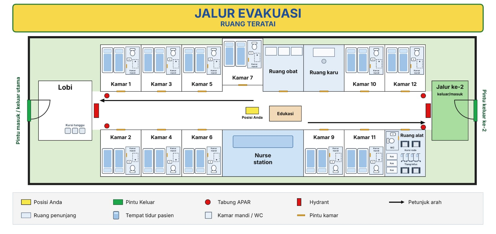

Denah ruangan
Cara menuju Ruang Teratai dan letak area di dalamnya.
Dari gerbang rumah sakit sampai ke nurse station
Masuk area RSUD AWS
Jl. Palang Merah Indonesia No. 1, Samarinda.
Menuju Ruangan Teratai
Ikuti papan petunjuk "Teratai". Rute detail menyusul.
Naik ke lantai ruangan
Lantai —, gunakan lift atau tangga.
Lapor ke nurse station
Pengunjung dan penunggu melapor ke perawat jaga sebelum masuk kamar.
Denah ruangan
Ketuk salah satu area untuk melihat keterangannya. Ruang Teratai terdiri dari 12 kamar pasien, nurse station, dan ruang penunjang.
Di layar kecil, geser denah ke samping untuk melihat seluruhnya.
Jalur evakuasi
Ruang Teratai punya dua pintu keluar, di kedua ujung lorong. Saat keadaan darurat, tetap tenang dan ikuti arahan petugas.

Ketuk untuk memperbesarKamar 1–7 dan nurse station
Keluar lewat lorong ke arah lobi, menuju pintu masuk/keluar utama.
Kamar 9–12 dan ruang alat
Keluar lewat lorong ke arah sebaliknya, menuju pintu jalur ke-2.
Alat pemadam
Tabung APAR dan hydrant ada di kedua ujung lorong. Hanya dipakai oleh orang yang terlatih.
Pasien yang tidak bisa berjalan
Jangan dipindahkan sendiri. Beri tahu petugas, mereka yang akan mengevakuasi.